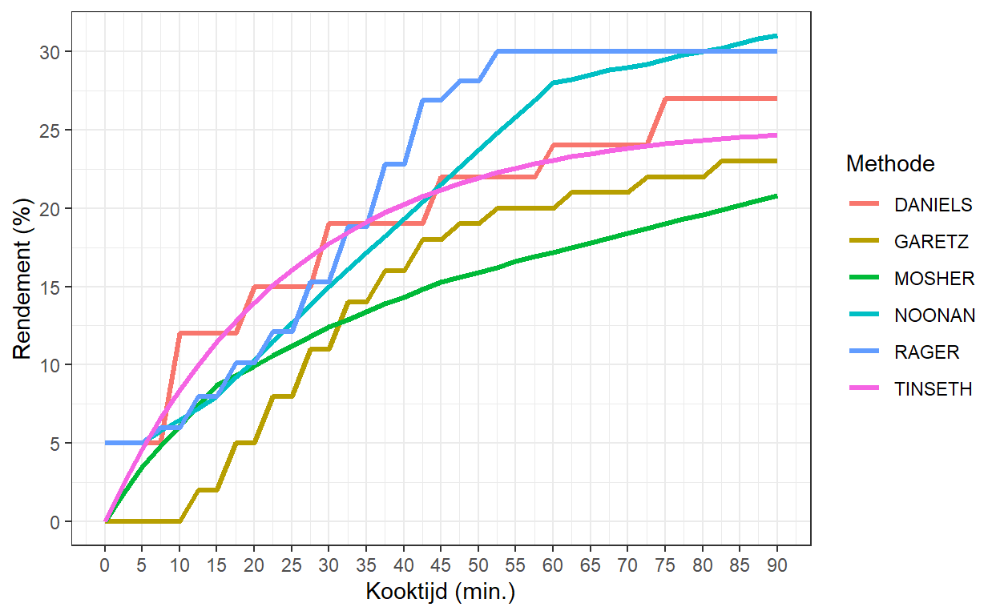
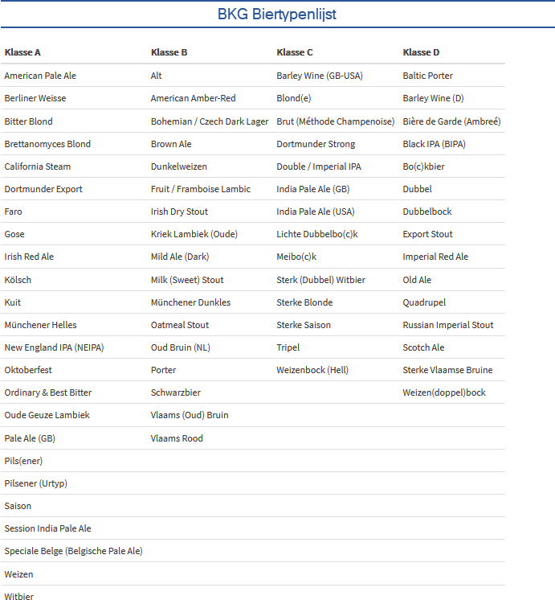

Home
Studieboeken
Softwijs
Vlearmoesbier
Categorieën
Alle
(9)
biertype
(2)
excel
(2)
hop
(3)
recept
(2)
rekenen
(3)
suiker
(1)
Vlearmoesbier
Blog over bierbrouwen

Hoprendement - Kooktijd
rekenen
hop
Relatie tussen de hopbitterheid en de kooktijd.
4 aug. 2020
Hopbitterheid en EBU (IBU)
rekenen
hop
Manieren om de bitterheid van hoptoevoegingen in bier te bepalen.
4 jun. 2020
Alfazuurwaarden hopoogst 2010-2019
hop
Alfazuurwaarden van hopoogst 2010-2019.
12 jan. 2020
BJCP Biertypenlijst
excel
biertype
De Amerikaanse BJCP biertypenlijst in een Excel bestand.
18 nov. 2019
invertsuiker
suiker
Hoe je invertsuiker kunt maken.
1 jun. 2019
SG-Brix-Plato
rekenen
Meeteenheden voor het stamwortgehalte.
29 dec. 2018
Sierra Nevada Resilience
recept
Recept van Sierra Nevada voor ondersteuning slachtoffers bosbranden.
29 nov. 2018

BKG Biertypenlijst
excel
biertype
De BKG biertypenlijst in een Excel bestand.
26 nov. 2018
Hoe kom je aan een recept
recept
Manieren om aan een recept te komen.
19 okt. 2018
Geen overeenkomsten